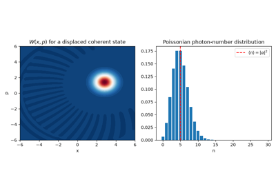
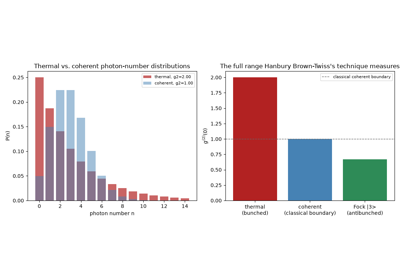
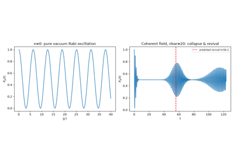
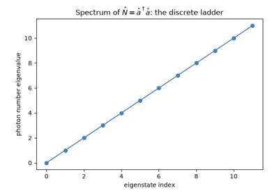
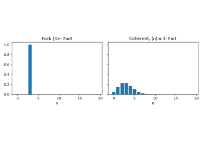
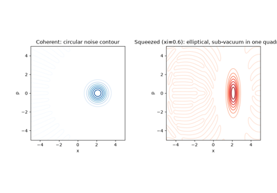
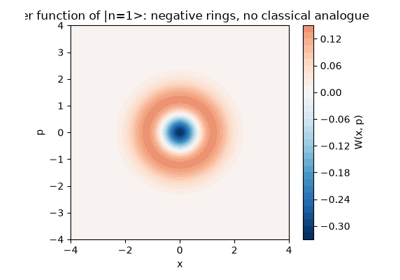

Quantum optics#
Light quantized in the truncated Fock basis: Dirac’s creation/annihilation ladder operators and vacuum fluctuations, Wigner’s phase-space quasi-probability distribution and the negativity of a single-photon Fock state, Glauber’s coherent states and their Poissonian photon statistics, the Jaynes-Cummings model’s vacuum Rabi oscillation and collapse-and- revival, Kimble/Dagenais/Mandel’s photon antibunching via the Fano factor, Hanbury Brown and Twiss’s intensity-correlation bunching, and Slusher’s observation of squeezed, sub-vacuum quadrature noise.

Glauber’s coherent states: displaced vacuum, Poissonian statistics

The Hanbury Brown-Twiss effect: bunching, coherent, and antibunched light

The Jaynes-Cummings model: vacuum Rabi oscillation and collapse-and-revival

Dirac’s quantization of the electromagnetic field: ladder operators

Kimble, Dagenais, and Mandel: photon antibunching and the Fano factor

Slusher et al.: squeezed light and sub-vacuum quadrature noise

Wigner’s phase-space distribution: negativity of a Fock state